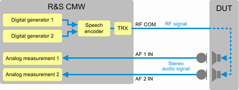

The scenario "Stereo Speaker Test" is designed for tests of stereo speakers, for example of bluetooth headphones.
Only audio measurements can be performed with this scenario. For speech quality tests, additional external equipment is required, see "Test Setup for External Speech Analysis (Mono/Stereo)".
The DUT is typically attached to an artificial head, providing artificial ears (microphones). Some DUTs support also a direct electrical coupling.
The DUT is connected to the R&S CMW via an RF connection. A signaling application is used to set up a speech connection to the DUT. A speech codec is also required (R&S CMW-B405A).
Two digital audio generators provide two mono audio signals. They are combined to a stereo signal, encoded, modulated on the RF and routed to the DUT. The DUT demodulates and decodes the signal and sends the two audio signals to its loudspeakers. Each artificial ear listens to one loudspeaker of the DUT and provides the resulting audio signal to an AF IN connector. The R&S CMW analyzes the two mono audio signals with two analog audio measurements.

The scenario uses both audio software instances. You cannot use another scenario in parallel.